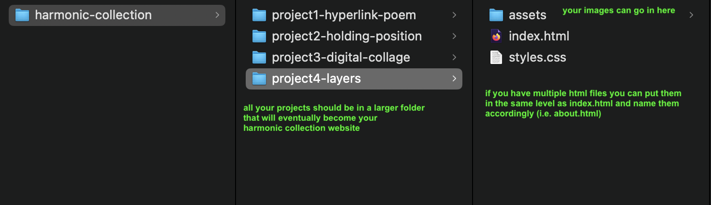
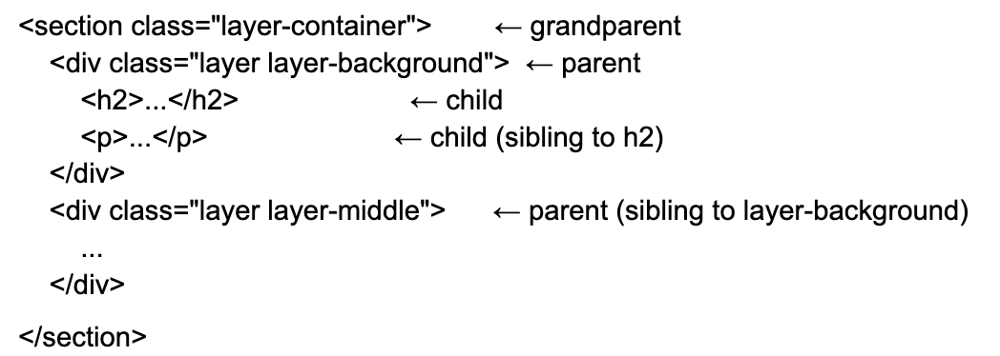

Project 4: Layers
Create your next Harmonic Collection entry that explores the concept of layers within your theme. This assignment is designed to help you review file organization, HTML nesting, and CSS classes while creating something meaningful for your collection.
Due 10/14
Think about how your theme has layers:
- Physical layers (if your theme is your commute: buildings, people, transportation, weather)
- Temporal layers (past and present versions of something)
- Emotional layers (surface feelings vs. deeper meanings)
- Information layers (what you see first vs. what's revealed on closer look)
Technical Requirements:
- File Organization & Paths
Your project folder should be organized like this:

Requirements:- All files are in appropriate folders
- All paths are relative and work correctly
- CSS is properly linked in the HTML
- All images load without broken links
- Folder/file names use lowercase and hyphens (not spaces)
- HTML Nesting & Family Structure: Your HTML must demonstrate clear parent-child relationships. Create at least three levels of nesting that represent the layers concept.
Example structure:

Requirements:- Proper indentation showing family relationships
- At least 3 levels of nesting
- Logical grouping of related content
- CSS Classes:Use CSS classes strategically to style your layers.
Requirements:- A reusable class used on multiple elements (e.g., .layer applied to each layer div)
- Specific ids for unique styling (e.g., #layer-background, #layer-foreground)
- At least one combination of classes on the same element (e.g., <div class="layer featured-layer">)
Content Requirements:
You must create a design first in figma and submit a link to your figma design in canvas. Your design should:
- Create content that explores your theme through the lens of "layers"
- Include at least 3-5 distinct visual layers
- Maintain connection to your other harmonic collection entries
Reflection Questions (1 sentence for each to be submitted in canvas):
- File Organization: How did organizing your files into folders help you work? What path issues did you encounter and fix?
- HTML Structure: Explain the parent-child relationships in one section of your HTML. Why did you nest elements this way?
- CSS Classes: Which classes did you reuse and which were specific? How did you decide when to make a new class vs. reusing an existing one?
- Theme Connection: How does the concept of "layers" relate to your Harmonic Collection theme?
Submission:
- Submit your code in google drive here.
- Submit your figma design link and question answers in canvas
Inspiration:
- https://brutalistwebsites.com/
- https://takeawalkonthewildside.rietveldacademie.nl/
- https://frontierimaginaries.org/editions/edition-3
- https://bramvanderbeke.com/
- https://2022.ccncn.eu/
- https://westspace.org.au/
- https://hii-mag.com/
- https://holdmenow.rietveldacademie.nl
- https://newpublic.substack.com/p/the-handmade-internet-is-making-a